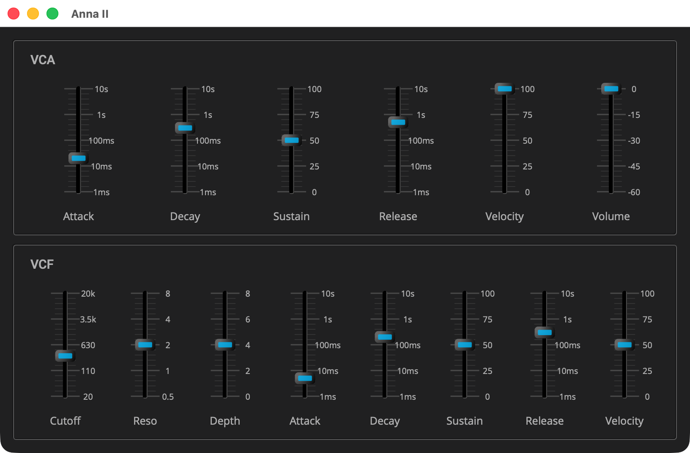

Anna II: The Filter
Overview
Stage 2 adds the filter: a resonant 24 dB per octave low-pass on every voice, swept by an envelope of its own. One contour shapes how loud a note is, the other how bright, as on a Minimoog or a Prophet, and a hard note can open the filter further as well as sounding louder. The panel grows a second row: the amplifier’s controls, now labeled VCA, and the filter’s, labeled VCF.

|
Read Anna I: The Voice first, and Your First Plugin: Gain before it. This
page covers only what stage 2 adds; the listings are the parts of stage
2’s files that are new or changed, and the rest is stage 1’s. Each
listing’s title links to its whole file, and all of stage 2 is in
|
Quick Start
As in Anna I: The Voice, with anna_2 in place of anna_1.
On macOS and Linux:
Q=/path/to/q
cp -R "$Q/example/q_plug/anna_2" /tmp/anna_2
cd /tmp/anna_2
cmake -B build -G Ninja -DCMAKE_BUILD_TYPE=Debug -DQ_ROOT="$Q"
cmake --build buildOn Windows, in a command prompt with the MSVC environment loaded:
set Q=C:\path\to\q
xcopy /E /I "%Q%\example\q_plug\anna_2" "%TEMP%\anna_2"
cd /d "%TEMP%\anna_2"
cmake -B build -G Ninja -DCMAKE_BUILD_TYPE=Debug -DQ_ROOT="%Q%"
cmake --build buildThen start the standalone app:
-
macOS:
open "build/products/Anna II.app" -
Linux:
"build/products/Anna II" -
Windows:
"build\products\Standalone-q_plug-anna-2_standalone\Anna II.exe"
Where the app takes its audio and MIDI from, and how to change it, is in The Standalone App.
The Controller
Eight parameters join stage 1’s six: the filter’s cutoff, resonance and envelope depth, its contour, and how much velocity reaches it.
enum
{
attack_id, decay_id, sustain_level_id, release_id (1)
, cutoff_id, resonance_id, env_depth_id
, filter_attack_id, filter_decay_id, filter_sustain_level_id
, filter_release_id
, velocity_id, filter_velocity_id (2)
...
};
...
q::frequency cutoff() const; (3)
double resonance() const;
double env_depth() const;
...
double filter_velocity() const; // 0 to 1| 1 | The indices move: velocity_id and volume_id shift down past the
filter’s. That is safe, since the indices are the plugin’s own. The
ids in the parameter list, which a saved preset holds, keep their values
(see Your First Plugin: Gain). |
| 2 | Velocity now reaches two destinations, the loudness and the filter. |
| 3 | The cutoff is a q::frequency, read back the way the times are. |
, parameter{6, "Cutoff", 300_Hz} (1)
.range((20_Hz).rep, (20_kHz).rep).log() (2)
, parameter{7, "Resonance", 2.0}.range(0.5, 8.0).log() (3)
, parameter{8, "Env Depth", 4.0}.range(0.0, 8.0).unit("oct") (4)
...
, parameter{9, "Filter Attack", 5_ms} (5)
...
, parameter{14, "Filter Velocity", 50.0}.range(0.0, 100.0).unit("%") (6)| 1 | An initial value of 300_Hz makes a frequency parameter, with ids 6
to 12, the ones stage 1 kept free. |
| 2 | The audible band, on a log taper, since the ear hears pitch in ratios. |
| 3 | Resonance, the filter’s Q, also on a log taper: 0.5 to 8 is four doublings. |
| 4 | How far the contour sweeps the cutoff, in octaves, on a linear taper, since octaves already count the way the ear does. |
| 5 | The filter’s own contour, on the same tapers as the amplifier’s. Its defaults give the usual filter contour: open at once, fall away, stay down. |
| 6 | Id 14, past stage 1’s 13. |
The Processor
The voice gains the filter, its contour, and what it needs to track the key:
struct voice
{
voice(
anna_envelope_config const& amp (1)
, anna_envelope_config const& filter
...
void filter( (2)
q::frequency cutoff, double depth
, double resonance);
...
q::adsr_envelope_gen
_filter_env; // and how bright (3)
...
q::svf _filter; (4)
q::svf _filter2;
...
float _track = 0.0f; // key tracking, in octaves (5)| 1 | A voice is built with two envelope configs now, the amplifier’s and the filter’s. |
| 2 | The cutoff, depth and resonance, pushed into every voice once per
call to process. |
| 3 | The filter’s contour, beside the amplifier’s. |
| 4 | Q’s svf, from <q/fx/svf.hpp>. Two two-pole sections in series
make 24 dB per octave. The resonance sits on the first only; on both,
the peak would double. |
| 5 | Key tracking, worked out once per note. |
anna_envelope_config envelope_config() const;
anna_envelope_config filter_envelope_config() const; (1)
...
bool operator==(settings const&) const = default; (2)
...
static void push( (3)
...
void update_filter(); (4)
...
settings _filter_pushed;| 1 | The filter contour’s config, read from the controller as the amplifier’s is. |
| 2 | Two settings compare equal when nothing has changed, so
update_envelopes can skip the voices. |
| 3 | Pushes one contour’s changed settings into one envelope, shared by both contours. |
| 4 | Pushes the filter’s cutoff, depth and resonance into the voices. |
constexpr float key_tracking = 0.5f; (1)
...
constexpr float tracking_ref = 261.6256f; (2)
...
voice::voice(
...
, anna_envelope_config const& filter
...
: _env{amp, sps}
, _filter_env{filter, sps}
, _filter{1_kHz, sps, 2.0} // cutoff is set per sample; resonance Q (3)
...
void voice::on(q::frequency freq, float velocity, float filter_velocity)
{
...
_track = key_tracking * std::log2(as_float(freq) / tracking_ref); (4)
...
_filter_env.attack(); (5)
...
float voice::operator()(float pitch_factor)
{
...
auto const f = std::min(
_cutoff * std::exp2( (6)
_track + _filter_env() * _depth * _filter_velocity)
, _sps * 0.45f); (7)
...
return _filter2(_filter(q::saw(_phase++))) * env; (8)| 1 | Half an octave of cutoff per octave of pitch, the Prophet 5’s half setting. Without tracking, a patch set at middle C loses its fundamental three octaves up; full tracking costs the bass the weight players expect of it. |
| 2 | Middle C, the note where the cutoff slider reads true. |
| 3 | The filters start at 1 kHz. The cutoff is set on every sample, and the first section carries the resonance. |
| 4 | How far the key sits from middle C, in octaves. |
| 5 | Both contours start together, and release together. |
| 6 | The contour sweeps the cutoff in octaves above the slider’s setting, scaled by the depth and the filter’s velocity. The key’s offset is in octaves too, so the two add. |
| 7 | Kept below Nyquist, at 0.45 of the sample rate, where the filter would have nothing left to pass. |
| 8 | The sawtooth through both filter sections, then the amplifier’s contour. |
void anna_processor::push( (1)
...
if (now.attack != then.attack)
env.attack_rate(q::duration{now.attack}, sps);
...
void anna_processor::update_envelopes()
{
...
if (amp == _pushed && filter == _filter_pushed) (2)
...
push(v._env, amp, _pushed, amp_level, rate);
push(v._filter_env, filter, _filter_pushed
...
void anna_processor::update_filter() (3)
{
...
v.filter(cutoff, depth, resonance);
}| 1 | Stage 1’s pushing, factored out so both contours use it. |
| 2 | If nothing has changed, there is nothing to push, as in stage 1. |
| 3 | The filter’s settings are plain values, pushed into every voice on
every call, from the top of process, beside update_envelopes. |
void anna_processor::note_on(std::uint8_t key, float velocity)
{
allocate(key).on(midi::note_frequency(key)
, sensed(velocity, _ctl.velocity())
, sensed(velocity, _ctl.filter_velocity())); (1)
...
float anna_processor::sensed(float velocity, double sensitivity) const (2)
{
auto const s = float(sensitivity);
return (1.0f - s) + s * velocity;
}| 1 | One key velocity, sensed twice, once for each destination. |
| 2 | Each destination has its own sensitivity, the velocity sliders of the VCA and the VCF. |
The Presenter
auto cutoff = make_slider("20", "110", "630", "3.5k", "20k"); (1)
auto resonance = make_slider("0.5", "1", "2", "4", "8");
auto env_depth = make_slider("0", "2", "4", "6", "8");
...
auto f_attack = make_slider("1ms", "10ms", "100ms", "1s", "10s"); (2)
...
link(ctl::cutoff_id, cutoff); (3)
...
auto panel = [](char const* title, auto&& content) (4)
{
...
view_.content(
fixed_size({816, 504}, (5)
...
vtile( (6)
panel("VCA", (7)
...
panel("VCF",
...
box(bkd_color)
...
}| 1 | The cutoff’s labels are the frequencies at its quarters, since its range is the audible band rather than whole decades. |
| 2 | The filter’s contour, on the same sliders as the amplifier’s. |
| 3 | Bound the way stage 1’s are. |
| 4 | Stage 1’s framed group, made a function now that there are two. |
| 5 | The panel is larger, and plugin_info gives the same size. |
| 6 | Two rows, one above the other. |
| 7 | The amplifier’s row, VCA, is stage 1’s group; the filter’s row, VCF, carries what the filter is set to and the contour that sweeps it. |
The Plugin and the Build
anna.cpp changes the id, the name, the description and the view
size, 816 by 504. CMakeLists.txt changes the names and the AudioUnit
subtype, QAn2.
Components Used
| Component | Role |
|---|---|
The filter, two sections in series |
|
The filter’s contour, beside the amplifier’s |
|
A frequency on a log taper, octaves on a linear one |
Previous: Anna I: The Voice | Next: Anna III: The Chorus